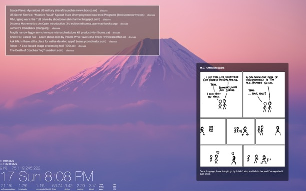

Customizing macOS for development
Monday, May 18, 2020
So your boss gave you a Mac for development. Or maybe you bought a Mac because you have to develop iOS apps. Or maybe you bought a MacBook because you need to develop software as well as look good at Starbucks (after the pandemic is over, of course).
The only bummer about macOS is that it’s Aqua desktop sucks for productivity. If you look over the shoulder of most Mac users, you’ll notice that their desktop looks like a very messy desk. Once you start using macOS for serious work, you’ll quickly realize that this is largely caused by the design of Aqua and not the user. Apple designed every aspect of Aqua to fit the needs of the most novice users, and not power users such as developers. Luckily, there are several things you can do to tweak your Mac into a fast developer workstation that boasts an interface the includes the productivity features available on Windows 10 and Linux desktops. In this blog post, I’ll share my general recommendations for turning macOS into a developer workstation.
This blog post assumes you know the basic structure of the macOS operating system. If you don’t, or you’re somewhat new to macOS but have some Linux knowledge, read my “macOS for Linux Admins” blog post first!
1. Install macOS a second time
This is something I highly recommend on any developer workstation, for reasons I’ll get to shortly. You can easily (and safely) install macOS multiple times on the same system because Apple now uses the APFS filesystem, which supports logical volumes on the same underlying partition.
Modern Macs come with a small ARM processor called the T2 chip that acts as the SSD controller, sound controller, touchbar controller, Trusted Platform Module (TPM), and pretty much anything else Apple wants to cram in there to save cost and maximize profit. When you get a new Mac, the filesystem on the SSD is encrypted by default, and this encryption is performed by the T2 chip. While this is generally a good thing for personal files, it causes havoc if you perform many small writes to the filesystem because the T2 chip just can’t handle the load like other storage controllers can (it was designed for the storage needs of Facebook users at Starbucks, not the demands of a developer workstation). Thus, if you are testing a containerized app using a Docker/LinuxKit setup, K8s, or a Linux/Windows virtual machine (which incur a large storage performance cost on macOS for some reason), it’s best to create another “development” installation of macOS alongside your default “personal” installation of macOS that is not encrypted to ensure that the T2 chip can give you fast storage performance. Each time you boot your Mac, you can hold down the Option key on your keyboard to get a menu that allows you to choose which macOS installation you want to boot (development or personal).
Another reason why it’s good to install macOS a second time is that your personal and development installations can have different Apple IDs attached to them, which means that you can separate your personal Apple ID from an Apple ID that is used for developing software, or part of an Apple Developer Program for your organization.
To install macOS a second time, you must first create a new APFS logical volume. Open Disk Utility (/Applications/Utilities/Disk Utility), click the drop-down menu beside the View button in the toolbar and choose Show All Devices. Next, click the + button to create a new APFS volume. Give your APFS volume a name (e.g. development) and optionally set a Reserve (minimum) or Quota (maximum) size if you want to guarantee or limit the space the new logical volume can consume from the underlying partition, respectively.
Once you have a new volume, you can open the App Store, search for macOS Catalina and choose to download it (8GB). When the download is finished, the installation will start automatically. At the beginning of the installation, you’ll be prompted for the volume to install macOS to. Simply choose the new volume you created (e.g. development) and proceed through the rest of the installation normally. The new volume will not be encrypted, and the system will automatically boot into macOS installed on your new volume (unless you hold down the Option key at boot time and select your personal macOS installation).
Once you’re booted into your new (development) macOS installation, you can set up your developer environment. I’ve outlined some stuff you’ll want to do at minimum in the following sections:
2. Install a package manager
In order to make macOS a useful developer workstation, you need to add a LOT of open source software to it. Homebrew (or just brew) is a proper package manger for macOS that allows you to obtain open source software from GitHub and compile it (if necessary) to run on macOS with simple commands. For example, brew install neofetch will install neofetch while brew install nvim will install neovim. You can also use brew to remove software or restart services that were installed via brew. Most open source software that you’re ever going to need can be installed using brew if there isn’t a pre-compiled binary available from some website. To install, go to https://brew.sh/ and copy the command shown into a terminal window. This will first download the Xcode command line tools (which can take a while) before installing the Homebrew system files.
3. Install a better terminal, code editor and font set
The three I’ve chosen below are the ones I use the most, but you may prefer different packages, or additional ones depending on your development needs. For example, you may need to install additional developer frameworks and IDEs for your development (my recommendations here don’t assume what sort of development you’ll be doing).
iTerm is a fully customizable terminal emulator that you should use instead of the default terminal emulator that comes with macOS (/Applications/Utilities/Terminal.app). You can download the iTerm binary from https://www.iterm2.com/, move the downloaded iTerm2 binary to your /Applications folder and create a link to it on your Dock for easy access.
Visual Studio Code is arguably the best code editor you can get, and fully customizable. Of course the traditional vi/vim editor is great, but Visual Studio is better suited for development. You can download the binary from https://code.visualstudio.com/, move the downloaded binary to your /Applications folder and create a link to it on your Dock for easy access.
Nerd Fonts are incredibly valuable the more you dive into customizing your desktop experience (trust me). As their GitHub site says, “Nerd Fonts takes popular programming fonts and adds a bunch of Glyphs” (https://github.com/ryanoasis/nerd-fonts). You can install them using the following brew commands:
brew tap homebrew/cask-fonts
brew cask install font-hack-nerd-font
4. Install an automatic tiling window manager
To avoid the mess that is Aqua, you’ll need a proper window manager. You’ll want to install yabai (https://github.com/koekeishiya/yabai), which manages the windows that you have on your system automatically so that everything is organized perfectly.
Unfortunately, you have to disable two features of macOS System Integrity Protection (SIP) to allow yabai to work. If you research them, you’ll find that they are quite minor, and you’re only disabling them on your second (developer) macOS installation only, so it won’t affect your personal installation of macOS.
To disable these two features of SIP, power down your computer and then boot it while holding down the Command (⌘) + R key combination to enter recovery mode. Log into your second installation of macOS when prompted and select Terminal from the Utilities menu. Next, type the following command (ignore any warnings) and reboot normally afterwards:
csrutil enable --without debug --without fs
Following this, you can install yabai using brew, and then start and allow yabai to run on your system. The steps to do this are listed here: https://github.com/koekeishiya/yabai/wiki/Installing-yabai-(latest-release). You’ll also need to create a ~/.yabairc file with the configuration you want. The example yabairc file listed on the yabai website would probably suit your needs, and the options within are fairly self-explanatory. That being said, here is my ~/.yabairc configuration in case you want to paste it into your ~/.yabairc file.
5. Install a hotkey daemon
As a programmer, there is nothing more important than a great set of customized keyboard shortcuts for everything you need to do. That’s where a hotkey daemon, such as skhd (https://github.com/koekeishiya/skhd) comes in. You can install and start the skhd hotkey daemon using brew:
brew install koekeishiya/formulae/skhd
brew services start skhd
You’ll also need to create a ~/.skhdrc file with the configuration you want. The example .skhdrc file listed on the skhd website has lots of great examples, but here is my ~/.skhdrc configuration in case you want to paste it into your ~/.skhdrc file. In my ~/.skhdrc file, the first three lines set keyboard shortcuts for my main apps (the open command searches /Applications for the name specified):
cmd - return : open -a iTerm
cmd + shift - return : open -a "Visual Studio Code"
alt - return : open -a Firefox
The remaining (many) lines of my ~/.skhdrc file create shortcuts that use yabai to modify window behavior. For example, to shift window focus:
alt - left : yabai -m window --focus west
alt - down : yabai -m window --focus south
alt - up : yabai -m window --focus north
alt - right : yabai -m window --focus east
You’ll want to spend time to look over and modify these shortcuts to suit your needs!
6. Clean up Aqua and install a widget system
The next thing you should do is get the annoying parts of Aqua off your desktop to minimize distractions. Open System Preferences, go to General and auto-hide the menu bar. Next, go to Dock in System Preferences and move your Dock position to the right of the screen (since we tile windows from left to right and want to maximize the vertical space used by them). Also choose the option to auto-hide the Dock so that it stays out of view unless you need it.
Of course, there are always some things you’ll want to always have on your desktop in the absence of a menu bar or Dock. For these, you can install a widget system, such as Übersicht. You can download the Übersicht binary from http://tracesof.net/uebersicht/, move it to your /Applications folder, and create a link to it on your Dock for easy access. The Übersicht website also has widgets for you to download and drag to your widgets folder (you can see this folder by selecting Open Widgets Folder from the Übersicht menu in the top menu bar). To customize the widgets, edit the .jsx file (they are written in JavaScript + React's JSX) and possibly the related .json file, depending on the widget.
The three widgets I have on my desktop (shown below) display the top Hacker News posts in the upper left, system statistics and time information in the lower left, and a random XKCD comic in the lower right (for sanity purposes):

If you want the 80s-style Mount Fuji wallpaper (courtesy of r/unixporn), you can get it here: https://github.com/Who23/dots/blob/master/walls/wallpaper.jpg
{kind=link}
Of course, when you open applications (using skhd shortcuts), their layout will be adjusted automatically by yabai as shown below:

Of course, you’ll notice that I use tmux in my iTerm2 alongside a starship prompt to maximize my screen real estate. Both of these can easily be installed using brew:
brew install tmux
brew install starship
(you must also add eval "$(starship init zsh)" to your ~/.zshrc)
That’s pretty much the basic configuration I’d recommend doing for any developer using macOS. I hope you find it helpful!